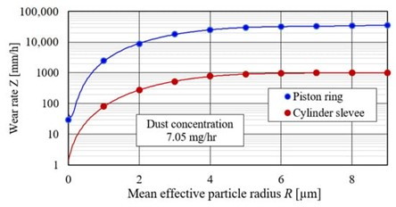
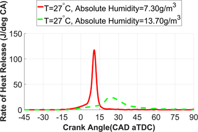
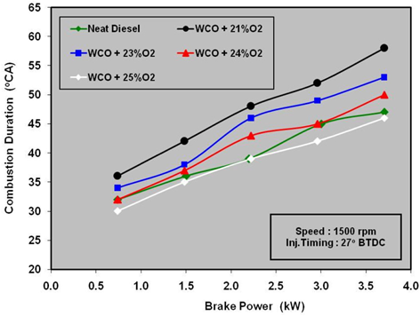

Combustion engine performance and efficiency are greatly impacted by variations in air quality, such as particulate
matter (small solid particles and liquid droplets hanging in the air), humidity, and oxygen levels, can also upset
the precise air-fuel mixture that a combustion engine’s performance relies on. Particulates like dust and soot can
build up inside the engine therefore increase wear inside the engine this wear will then decrease the performance
and if unattended will eventually cause malfunctions. Overly high humidity can lower the oxygen density of the air,
which lowers engine overall power and efficiency. On the other hand, air that is high in oxygen can improve engine
performance but has a negative impact on the environment as it worsens nitrogen oxide (NOx) emissions, which
increases air pollution. The lifespan and performance figures of an engine can be improved by refining engine
design and creating advanced air filtering systems.
Introduction
In my study I will be talking about the main factor that can decrease an engine's performance over time, which
is wear and tear caused by poor maintenance in the form of unregular filter replacement. Another area that
was of focus during my research was on how air humidity affects performance figures of engines and how it participates
in accelerating the buildup of debris inside air filters and therefore causing thei lifespan to drastically decrease.
Analysis and discussion
Accumulation of particulate matter in an engine’s air filter’s is the key area that causes wear and tear inside an
engine this is proven in a 2018 study which found that dust, which is sucked with air into engine cylinders, only
partly takes part in destructive influence on engine elements. The authors of [1]state that about 30% of the
pollutants getting with the air into the engine super-piston space may get out in basically the same form with
the exhaust gases from cylinders to the exhaust system. These particles, although small, when accelerated to a
high velocity through the turbines can cause scratches on the engine’s pistons which overtime cause gaps for air
and fuel to escape and decrease the engine’s maximum power output.
Figure 1 shows the Effect of particle size on wear rate of cylinder liner and piston ring.
Figure made by the authors of source [2]

In this figure it is observed that particles larger than 6µm have no increasing effect at damaging the piston’s
ring and sleeve, and particles between 0 and 2 µm did very minimal damage. Therefore, our focus on air intake
filtration should be aimed at reducing particles of the size 2µm and larger this can be done using High-Efficiency
Particulate Air (HEPA) Filters. These filters can trap particles as small as 0.3 µm with an efficiency of 99.97%.
and are also 99.9% effective at trapping particles larger than 1 µm [4]. If particulates any larger than 1 µm are
kept out of our engines this means that almost no damage at all will be done to engine components die to unfiltered
air and will increase the lifespan of our engines drastically. These filters are used in high-performance and luxury
vehicles but in the near future they will become cheaper and more easily accessible to all vehicle owners.
Air humidity is another factor of air quality that can play a significant role in a combustion engine’s power output.
This loss in power could be due to various factors like the reduction in oxygen density, a reduction in fuel
efficiency and negative impacts on air filtration systems. Humid air contains a higher proportion of water vapor,
which displaces oxygen molecules therefore the air has a lower oxygen content which disrupts the precise balance of
air-fuel mixture required for maximum power output. This disruption in the air-fuel mixture causes the engine to be
less efficient and therefore burns up more fuel to maintain the same power output. Air humidity is also a key factor
in the common clogging of air filtration systems as the water vapour in the air can cause condensation to occur
inside a engine’s air filters the condensation mixed with the particulates captured by the air filter causes blockages
and reduce the filter’s efficiency, this allows particles to enter the engine which as mentioned before can be harmful
to the engine’s components.
Figure2. showing how humidity in the air affects the rate of heat released during combustion inside the engine.

As seen in Figure2.due to water having significantly higher specific heat capacity, it increases the specific heat
capacity of the ignition substance which results in lower compression and combustion temperatures, respectively. This
delays the auto-ignition event, thereby lowering the rate of heat release and lengthening combustion duration [5].
Lengthened combustion durations reduce combustion efficiency of the engine as it does not reach the required temperature
for complete combustion to occur, therefore the full amount of fuel is not utilized, and the engine’s power is limited
because of this. As fuel is unutilized the engine uses a larger volume of fuel to produce the same power figures, this
causes a significant increase in fuel consumption and operational cost.
There are solutions to this problem such as modern variable ignition timing and adaptive combustion strategies, but
these are still in their early stages and are currently very expensive systems which are only utilized in the most
modern engines.
Figure3. shows difference in combustion duration with different Oxygen concentrations of air at Different Engine Power
outputs. [6]

The humidity in air causes it to displace oxygen molecules which causes a lower percentage of oxygen in the air,
figure3 investigates the duration taken for the engine to produce certain power outputs at a constant 1500rpm, as seen
in figure 3 air with lower oxygen percentage takes a longer time to produce the same amount of power as that of air
with high oxygen percentages.
Conclusion
In conclusion I believe my research has identified what areas of air filters need improvements to benefit customers as
air filtration is one of the key parts of maintaining our engines healthy, another area which may need improvements is
an improvement to moisture filtration as it can clog up air filters and shorten their life span. This research can be
used by engine and air filter manufacturers to understand how their products are currently operating and how they can
be improved. To further develop this research, it may be beneficial to investigate how different types of particulates
damage engine components and how different climates around the world have their own needs in engine air filtration as this
can be a key advertising strategy for manufacturers.
This research can also be utilized by other industries as there are various uses of air filters such as in machines like:
chainsaws, clothe driers, kawn mowers, air conditioners and many oter commonly used machines.
References
[1]
Long, J.; Tang, M.; Sun, Z.; Liang, Y.; Hu, J. Dust Loading Performance of a Novel Submicro-Fiber Composite
Filter Medium for Engine. Materials 2018, 11, 17. ]
[CrossRef]
[2]
Alfadhli, A.; Alazemi, A.; Khorshid, E. Numerical minimisation of abrasive-dust wear in internal combustion
engines. Int. J. Surf. Sci. Eng. 2020, 14, 68–88.
[Google Scholar] [CrossRef]
.png)